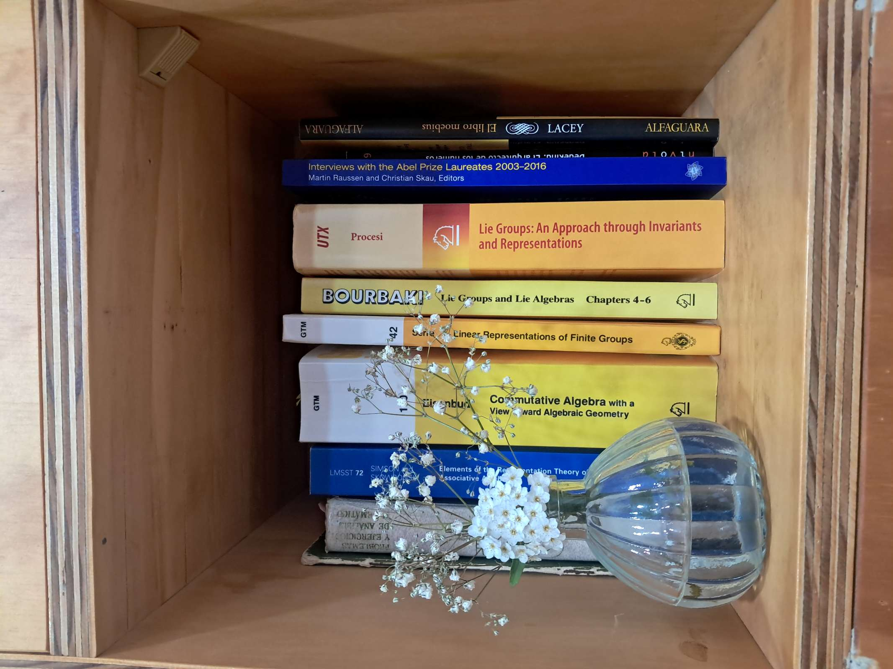

Research
Research interests
I work in representation theory and invariant theory, with emphasis on reflection groups and non-commutative algebraic structures.
- Quaternionic reflection groups
- Zero-fiber rings and quotient singularities
- Symplectic reflection algebras and rational Cherednik algebras
- Invariant theory and diagonal coinvariant rings
- Path algebras, quivers, and computational algebra
- Wonderful models and subspace arrangements
Current projects
Zero-fiber rings for rank 2 quaternionic reflection groups
This project studies zero-fiber rings associated with rank 2 quaternionic reflection groups, combining lower bounds coming from symplectic reflection algebras with upper bounds obtained by explicit Gröbner basis computations.
Wonderful models of subspace arrangements for division rings
This project explores versions of wonderful models in settings related to subspace arrangements over division rings.